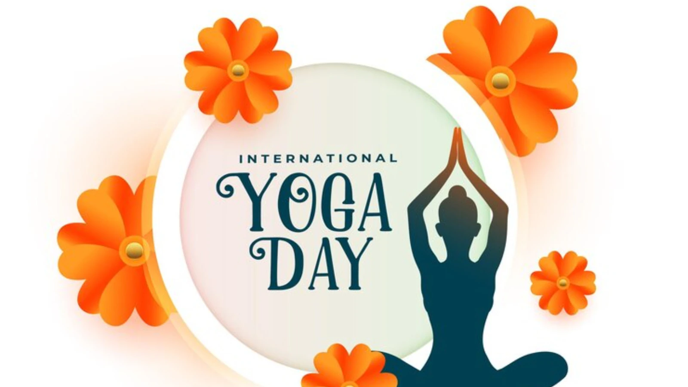

June 21, 2023
Yoga is a timeless practice that has gracefully adapted to the needs of every generation. From early childhood to senior years, yoga offers a holistic approach to health by promoting flexibility, strength, and mental clarity. Through playful poses for children, dynamic flows for adults, and gentle stretches for seniors, yoga remains relevant and beneficial at every stage of life.
Children benefit from imaginative yoga sessions that enhance coordination, concentration, and self-expression. As individuals grow, yoga becomes a grounding tool to navigate the stress of adolescence and adulthood—balancing emotions, boosting confidence, and supporting physical well-being. Practicing yoga in these formative years lays a strong foundation for a balanced lifestyle.
In the later years of life, yoga offers a gentle yet effective way to maintain mobility, reduce joint pain, and improve cardiovascular health. Chair yoga and restorative poses help seniors manage chronic conditions while fostering a sense of community and inner peace. No matter the age, yoga empowers individuals to live mindfully and vibrantly.